Arraste a ponta da página, use as setas ou deslize o dedo para folhear.
Miranda/MS · 7º ano
Caderno dos Guardiões da Biodiversidade
Unidades de Conservação e aves de Miranda


Fotos da capa: Fundação Neotrópica do Brasil (2026). Guia Fotográfico Aves do Mato Grosso do Sul. Créditos fotográficos: Breenda Rezende, Fernando de Almeida, Guilherme Dalponti, Jéssica Prestes e Meryelle Oliveira.
Este caderno pertence ao grupo:
Guardiões
EscolaEscola Municipal Waldemar João de Souza
Turma7º ano · período matutino
O que vocês escrevem fica guardado só neste aparelho.
- Realização
- Prefeitura de Miranda, por meio da Secretaria Municipal de Meio Ambiente e Recursos Hídricos (SEMARH), órgão gestor da REBIO.
- Parceria
- Conselho Municipal de Meio Ambiente (COMDEMA) e Fundação Neotrópica do Brasil, com o apoio da Secretaria Municipal de Educação de Miranda.
- Elaboração
- NOVAeng Engenharia Ltda.
- Fotografias
- Fundação Neotrópica do Brasil, Guia Fotográfico Aves do Mato Grosso do Sul. Créditos fotográficos do guia: Breenda Rezende, Fernando de Almeida, Guilherme Dalponti, Jéssica Prestes e Meryelle Oliveira. Parque Nacional do Juruena: Rafael Mitsuo (2024), CC BY-SA 4.0, Wikimedia Commons.
- Ilustrações
- Ícones e colagem da capa: NOVAeng Engenharia Ltda.
Glossário de siglas
- CEUC
- Cadastro Estadual de Unidades de Conservação
- COMDEMA
- Conselho Municipal de Meio Ambiente
- FUNBIO
- Fundo Brasileiro para a Biodiversidade
- ha
- hectare, unidade de medida de área
- Ibama
- Instituto Brasileiro do Meio Ambiente e dos Recursos Naturais Renováveis
- ICMBio
- Instituto Chico Mendes de Conservação da Biodiversidade
- IMASUL
- Instituto de Meio Ambiente de Mato Grosso do Sul
- MS
- Mato Grosso do Sul
- Prevfogo
- Centro Nacional de Prevenção e Combate aos Incêndios Florestais, do Ibama
- REBIO
- Reserva Biológica
- RPPN
- Reserva Particular do Patrimônio Natural
- SEMARH
- Secretaria Municipal de Meio Ambiente e Recursos Hídricos
- SNUC
- Sistema Nacional de Unidades de Conservação da Natureza
- UC
- Unidade de Conservação
Sumário
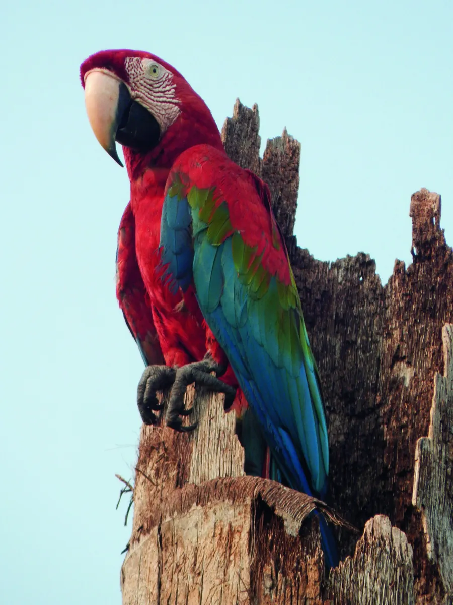
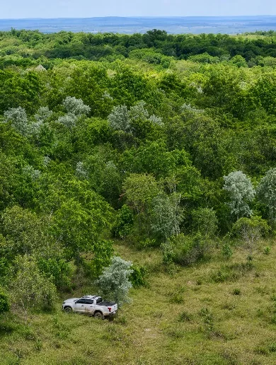
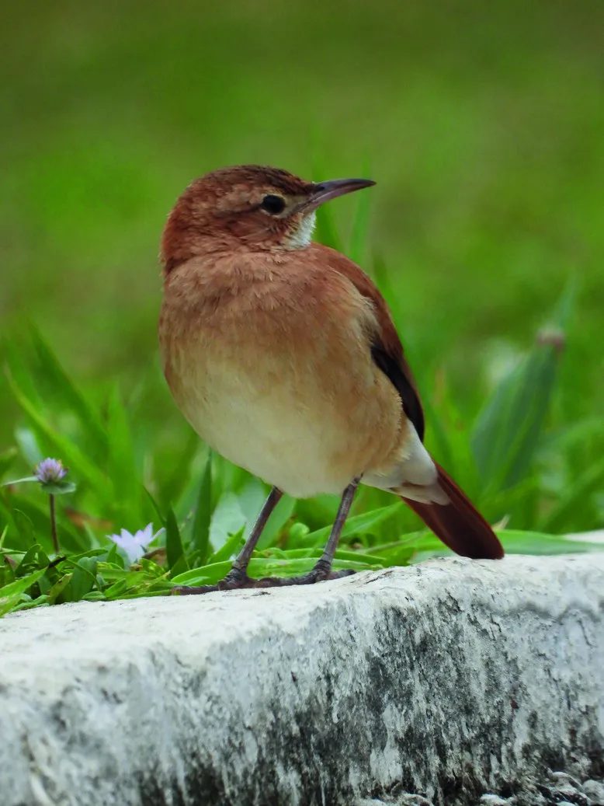
Arara-vermelha, vista aérea de vegetação e joão-de-barro. Fotos: Fundação Neotrópica do Brasil (2026). Guia Fotográfico Aves do Mato Grosso do Sul. Créditos fotográficos: Breenda Rezende, Fernando de Almeida, Guilherme Dalponti, Jéssica Prestes e Meryelle Oliveira.
Apresentação para que serve este caderno?
Este caderno vai acompanhar vocês na palestra e na aula de artes
Olá, Guardiões da Biodiversidade! Este caderno é de vocês. Ele vai acompanhá-los na palestra em sala de aula e na aula de artes, para conhecer as Unidades de Conservação e as aves de Miranda.
- Parte 1. Unidades de Conservação de Miranda: o que é uma UC, os tipos de UC, a REBIO e a RPPN Dona Aracy.
- Parte 2. Aves de Miranda: o papel das aves, como observar, como identificar uma ave pelas partes do corpo e a Galeria de aves.
- Parte 3. Fogo e áreas protegidas: o que é incêndio, queima controlada e manejo do fogo, quem protege as UCs de Miranda do fogo e a campanha Miranda Sem Fogo.
Façam a lápis e conversem no grupo antes de responder: o caderno é de todos.
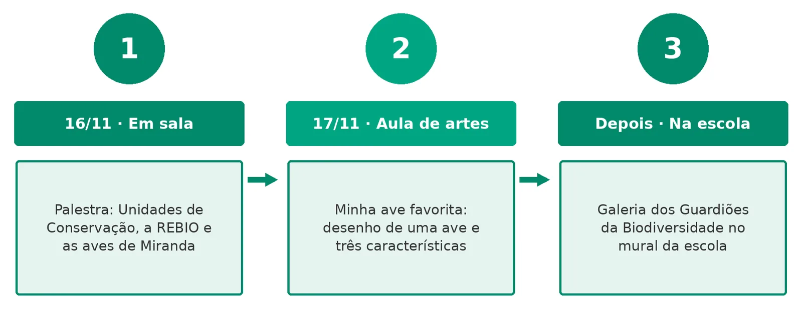
Combinados de Guardiões
Guardiões da Biodiversidade cuidam da natureza em todo lugar: na escola, em casa e nas áreas protegidas, que têm regras próprias para proteger a natureza (Brasil, 2000). Por isso, na palestra e na aula de artes:
Atividade 1 Combinado da turma
Depois da conversa com a equipe do projeto, escrevam aqui mais um combinado que vocês acham importante para a palestra e a aula de artes:
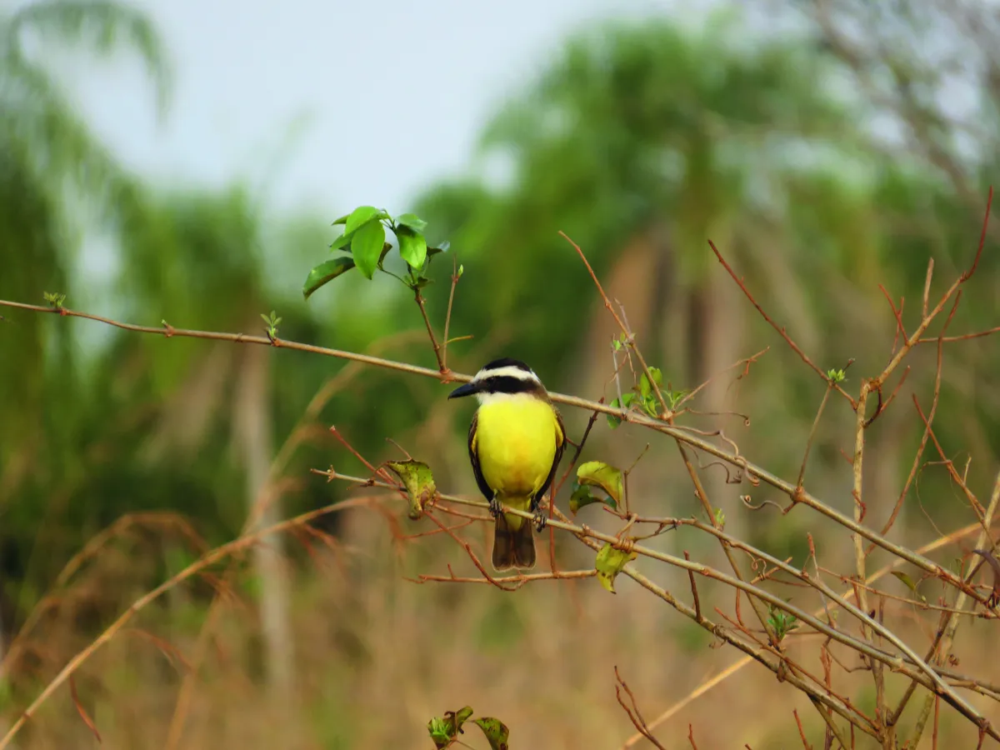
Parte 1.
Unidades de Conservação de Miranda
Unidade de conservação: espaço territorial e seus recursos ambientais, incluindo as águas jurisdicionais, com características naturais relevantes, legalmente instituído pelo Poder Público, com objetivos de conservação e limites definidos, sob regime especial de administração, ao qual se aplicam garantias adequadas de proteção.
Lei nº 9.985/2000, art. 2º, inc. I
O que é uma Unidade de Conservação?
Em outras palavras: uma Unidade de Conservação (UC) é uma área criada oficialmente pelo poder público, com limites definidos, para proteger a natureza que existe nela, e que funciona com regras especiais de uso (Brasil, 2000, art. 2º, inc. I).
No Brasil, as UCs fazem parte do Sistema Nacional de Unidades de Conservação da Natureza, o SNUC, criado pela Lei nº 9.985, de 18 de julho de 2000. O SNUC reúne as UCs federais, estaduais e municipais (Brasil, 2000, arts. 1º e 3º).
Entre os objetivos do SNUC estão manter a diversidade biológica, proteger as espécies ameaçadas de extinção, proteger e recuperar os recursos hídricos e favorecer a educação e a interpretação ambiental (Brasil, 2000, art. 4º, inc. I, II, VIII e XII).
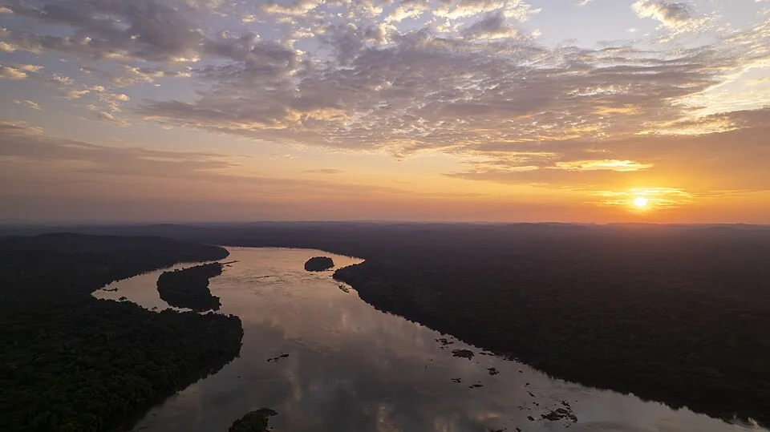
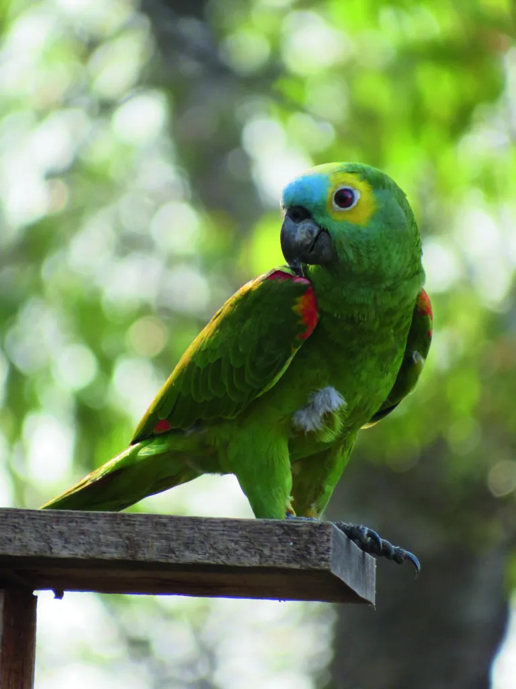
Mapa mental: Unidade de Conservação
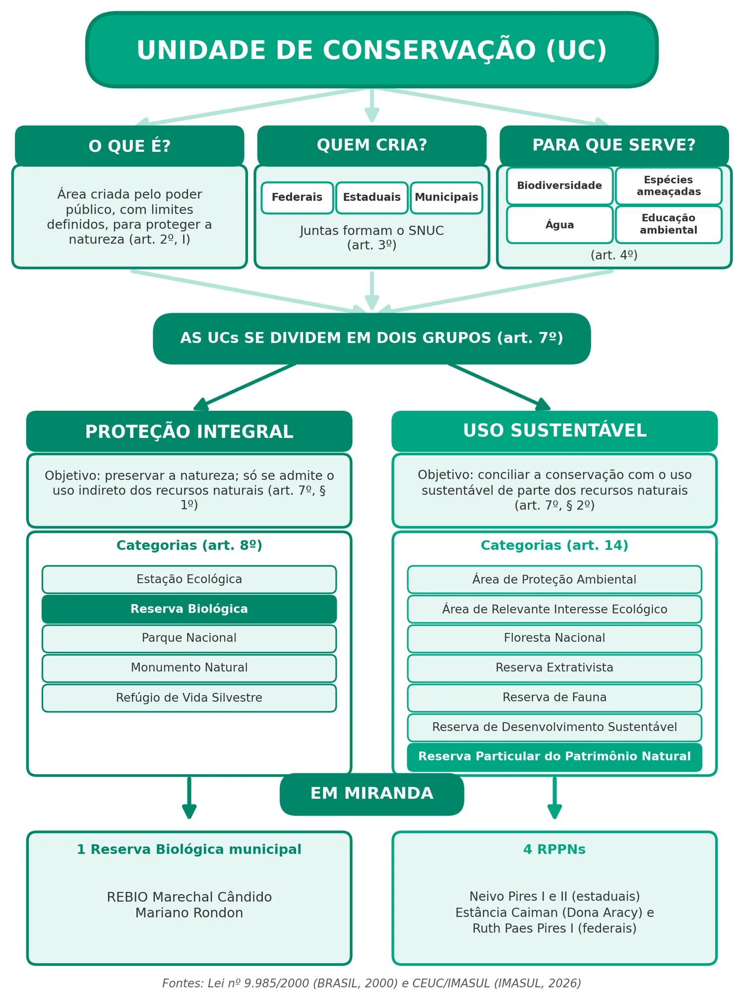
Atividade 2 Proteção Integral ou Uso Sustentável?
Leiam o que cada UC permite, pela Lei do SNUC, e marquem a qual grupo ela pertence. Desafio: escrevam o nome da categoria de UC.
Unidades de Conservação em Miranda
O Cadastro Estadual de Unidades de Conservação, do Instituto de Meio Ambiente de Mato Grosso do Sul (IMASUL), registra estas UCs com área em Miranda (IMASUL, 2026):
| Unidade de Conservação | Esfera | Grupo |
|---|---|---|
| REBIO Marechal Cândido Mariano Rondon | Municipal | Proteção Integral |
| RPPN Fazenda Portal do Pantanal Sul I (Neivo Pires I) | Estadual | Uso Sustentável |
| RPPN Fazenda Portal do Pantanal Sul II (Neivo Pires II) | Estadual | Uso Sustentável |
| RPPN Estância Caiman (Dona Aracy) | Federal | Uso Sustentável |
| RPPN Ruth Paes Pires I | Federal | Uso Sustentável |
Categorias: Reserva Biológica (REBIO) e Reserva Particular do Patrimônio Natural (RPPNs). Fonte: IMASUL (2026). A RPPN Estância Caiman (Dona Aracy) tem área em Miranda e em Aquidauana.
Atividade 3 Leiam o gráfico
a) Qual é a maior UC com área em Miranda? E a menor?
Ver resposta
Maior: RPPN Estância Caiman (Dona Aracy), parte em Miranda, 4.010,4 ha. Menor: RPPN Ruth Paes Pires I, 20,7 ha.
b) Somem as áreas das cinco UCs. Quantos hectares de UC existem em Miranda?
Ver resposta
4.010,4 + 868,5 + 320,1 + 119,5 + 20,7 = 5.339,2 ha.
c) A parte da RPPN Dona Aracy em Miranda é quantas vezes maior que a REBIO?
Ver resposta
4.010,4 ÷ 868,5 ≈ 4,6 vezes.
d) Um campo de futebol oficial mede 105 m por 68 m: um pouco menos que 1 hectare. Mais ou menos quantos campos de futebol cabem na REBIO?
Ver resposta
Um campo tem 105 × 68 = 7.140 m², ou 0,714 ha (1 ha = 10.000 m²). 868,5 ÷ 0,714 ≈ 1.216: cabem cerca de 1.200 campos de futebol na REBIO. Quem contou o campo como 1 hectare chegou a cerca de 870: a estimativa vale, mas o número real é maior, porque o campo tem menos de 1 hectare.
A REBIO de Miranda
Miranda tem uma Reserva Biológica municipal: a REBIO Marechal Cândido Mariano Rondon. Ela foi criada pelo Decreto nº 2.636, de 12 de dezembro de 2017, tem 868,5 hectares e é de domínio público, no grupo de Proteção Integral (IMASUL, 2026).
A REBIO é gerida pela Secretaria Municipal de Meio Ambiente e Recursos Hídricos (SEMARH).
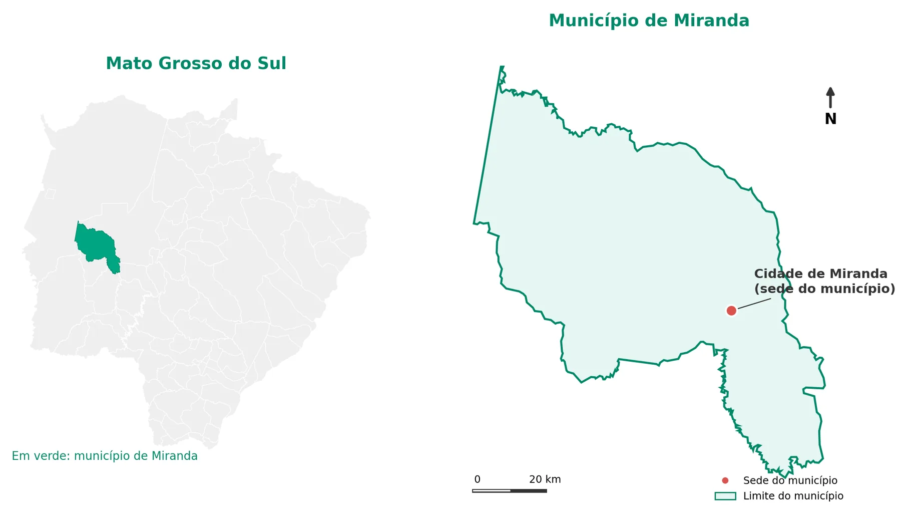
A Reserva Biológica

A Reserva Biológica é uma UC de Proteção Integral. O objetivo dela é proteger por completo os seres vivos e os outros elementos da natureza que existem dentro dos seus limites, sem interferência direta das pessoas e sem mudanças no ambiente. São permitidas apenas as ações para recuperar ambientes alterados e manter o equilíbrio natural, a biodiversidade e o funcionamento da natureza (Brasil, 2000, art. 10).
Na Reserva Biológica:
- a área pertence ao poder público (art. 10, § 1º);
- a pesquisa científica só acontece com autorização do órgão que cuida da unidade (art. 10, § 3º).
A REBIO está em recuperação
A Fundação Neotrópica do Brasil trabalha para recuperar áreas alteradas da REBIO e forma uma brigada comunitária, com moradores do entorno, para combater incêndios (FUNBIO, [s.d.]).
Atividade 4 Ficha da REBIO
Com base no texto da página anterior, completem a ficha.
Ver a ficha preenchida
REBIO Marechal Cândido Mariano Rondon · Miranda/MS · Reserva Biológica · Proteção Integral · Decreto nº 2.636, de 12 de dezembro de 2017 · 868,5 hectares · SEMARH (IMASUL, 2026; NOVAeng, 2026).
Atividade 5 Quem foi Marechal Rondon?
A REBIO de Miranda leva o nome de Marechal Cândido Mariano Rondon, que vocês conheceram na palestra. Escrevam duas informações sobre ele que chamaram a atenção de vocês.
Relembrar a palestra
Rondon nasceu em 1865, em Mimoso, hoje Santo Antônio de Leverger (MT). De 1892 a 1915, construiu linhas de telégrafo de Cuiabá ao Araguaia e de Cuiabá a Corumbá e, com a Comissão Rondon, trabalhou na Amazônia. Em 1910, foi o primeiro diretor do Serviço de Proteção ao Índio. Tinha o lema “Morrer se preciso for, matar nunca”. Morreu em 1958, no Rio de Janeiro, e é o Patrono das Comunicações do Brasil.
Em setembro de 1905, o então major Rondon mediu e demarcou a área da Vila de Miranda, o que hoje seria o perímetro urbano da cidade, e anotou croquis e cálculos na caderneta de campo, hoje guardada pela Agraer, em Campo Grande.
Fontes: Biblioteca Nacional (2018), Guia de coleções da Divisão de Manuscritos, p. 409-410; Correios, Museu Correios: Marechal Rondon; Agraer (2016); Santos (2025).
A RPPN Dona Aracy
A RPPN Dona Aracy fica na Estância Caiman, na planície do Pantanal, a 36 km da cidade de Miranda. É uma área particular, protegida para sempre, criada em 2004. Ela tem 5.603,2 ha: 70,7% em Miranda e o restante em Aquidauana. O nome homenageia a Dra. Aracy Augusta Leme Klabin (Fibracon, 2022).
Lá já foram registradas 344 espécies de aves e 283 espécies de plantas. A onça-pintada pode ser vista até durante o dia, e a arara-azul, ameaçada de extinção, faz ninho no manduvi e come frutos de acuri e bocaiuva (Fibracon, 2022).
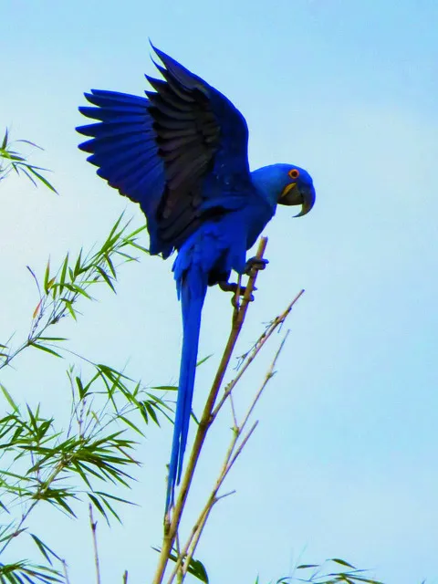
Atividade 6 Liguem cada termo ao seu significado
Os significados foram resumidos da Lei do SNUC (Brasil, 2000, art. 2º). Escolham o número do termo de cada significado.
- Uso indireto
- Plano de manejo
- Zona de amortecimento
- Corredor ecológico
- Preservação
Parte 2.
Aves de Miranda
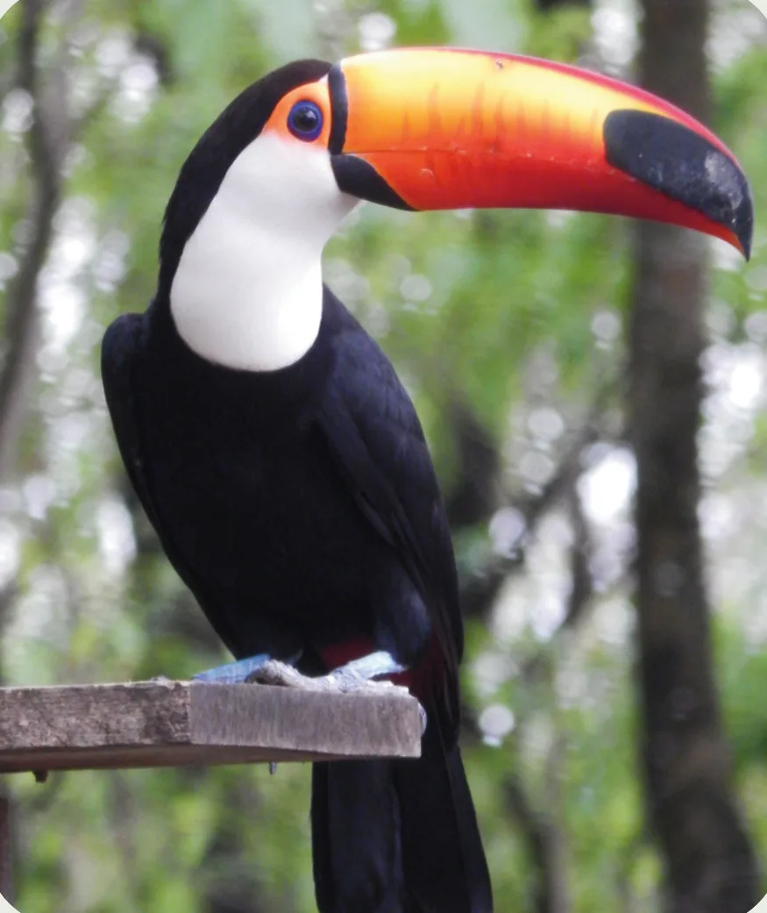
Tucano-toco (Ramphastos toco). Foto: Fundação Neotrópica do Brasil (2026). Guia Fotográfico Aves do Mato Grosso do Sul.
O papel das aves na natureza
As aves são muito importantes para o equilíbrio da natureza. Elas ajudam a espalhar sementes, podem participar da polinização das flores, contribuem para o controle de outros animais e fazem parte das cadeias alimentares. Observar aves também é uma forma de conhecer melhor a biodiversidade de Miranda e entender por que ela precisa ser protegida.
Figura 5. O papel das aves na natureza. Elaboração: NOVAeng (2026). Toquem em cada carta para ler.
Os seis passos da observação de aves
Observar aves é exercitar a paciência e a atenção. Imaginem que, um dia, vocês vão observar aves no pátio da escola ou perto de casa. Estes seriam os passos de um Guardião:
- Parem. Fiquem em silêncio por alguns instantes e deixem o ambiente se acalmar.
- Escutem. Muitas aves são percebidas primeiro pelo canto. De onde vem o som?
- Procurem. Olhem para o chão, para os galhos, para o alto das árvores, para a água e para o céu.
- Usem o binóculo, se tiverem. Primeiro achem a ave a olho nu, sem tirar os olhos dela; depois levem o binóculo até os olhos.
- Anotem na hora. Cor do bico, das asas e da cauda, tamanho, o que a ave fazia e onde estava.
- Comparem. Usem a Galeria de aves deste caderno e a ajuda do professor para descobrir o nome da ave.
Figura 6. Os seis passos da observação de aves. Elaboração: NOVAeng (2026).
Como identificar uma ave
Para descobrir o nome de uma ave, observem as partes do corpo dela. O tamanho, o tipo de bico e as cores das penas ajudam a identificar a espécie, junto com o canto, o ambiente e o comportamento (Oliveira et al., 2011).
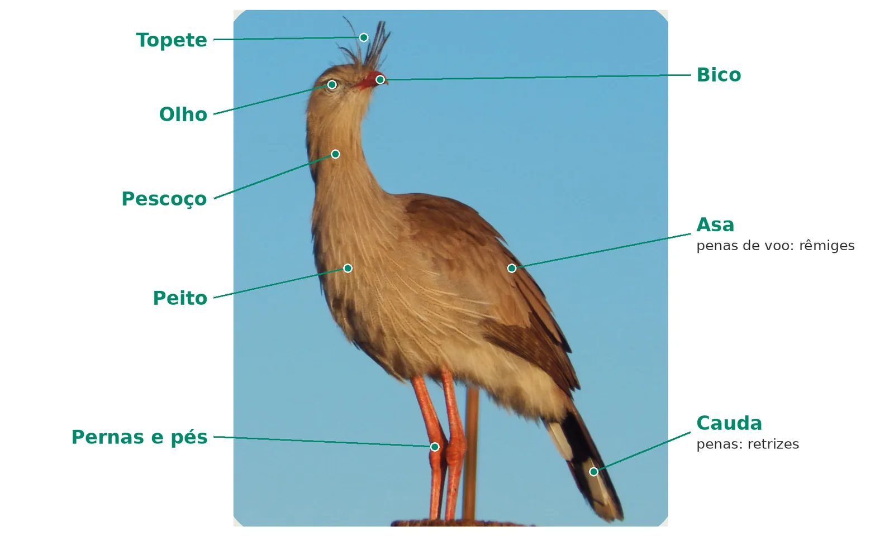
Tamanho. Comparem com uma ave que vocês conhecem bem, como o bem-te-vi, ou com a própria mão: menor, do mesmo tamanho ou maior.
- Bico
- O bico está ligado à alimentação. Bico curto, forte e curvo, como o de gaviões e corujas, corta a presa. Bico forte e curvo, como o de araras e papagaios, abre frutos e sementes duras. Bico curto em forma de cone quebra sementes. Bico longo e pontudo, como o das garças, pega peixes (Oliveira et al., 2011).
- Penas e cores
- Anotem a cor da cabeça, do peito, das asas e da cauda, e as manchas no corpo. As penas de voo da asa se chamam rêmiges, e as penas da cauda, retrizes (ICMBio, 2020).
- Cauda
- A cauda ajuda a direcionar o voo, e o formato dela muda de uma espécie para outra (Oliveira et al., 2011).
- Pernas e pés
- Dão pistas de onde a ave vive. As garças têm pernas longas para andar na água rasa; patos e biguás têm membrana entre os dedos para nadar; gaviões e corujas têm pernas fortes e unhas afiadas; a seriema tem pernas resistentes e é corredora (Oliveira et al., 2011).
Atividade 7 Detetives de aves
Escolham três aves da Galeria de aves, nas próximas páginas. Observem a foto de cada uma e anotem as pistas que ajudam a reconhecer a espécie, usando as partes do corpo da Figura 7.
Galeria de aves conheçam e marquem as que vocês já viram
As 40 aves estão no Guia Fotográfico Aves do Mato Grosso do Sul, da Fundação Neotrópica do Brasil. Usem as fotos na Atividade 7 e para escolher a ave da aula de artes. Marquem V se já viram e O se já ouviram a ave.
Fonte das fotos e dos nomes: Fundação Neotrópica do Brasil (2026). Créditos fotográficos do guia: Breenda Rezende, Fernando de Almeida, Guilherme Dalponti, Jéssica Prestes e Meryelle Oliveira.
Parte 3.
Fogo e áreas protegidas
Faça sua parte. Previna incêndios. Proteja vidas.
Nem todo fogo é igual
Incêndio florestal é o fogo sem controle e sem planejamento que atinge a vegetação. Queima controlada é o uso do fogo planejado, monitorado e controlado, em área definida e em condições específicas. Manejo integrado do fogo é o planejamento que junta a prevenção, as queimas planejadas e o combate aos incêndios (Brasil, 2024, art. 2º).
Muitos incêndios começam com pequenos descuidos: bituca de cigarro jogada na vegetação, queimada mal controlada e queima de resíduos. Queimar resíduos a céu aberto é proibido (Brasil, 2010, art. 47, III). Quando o fogo passa, perdem-se plantas, animais e água, a produção rural e o turismo, a saúde e o ar limpo, e a cultura pantaneira (Prefeitura de Miranda, 2026).
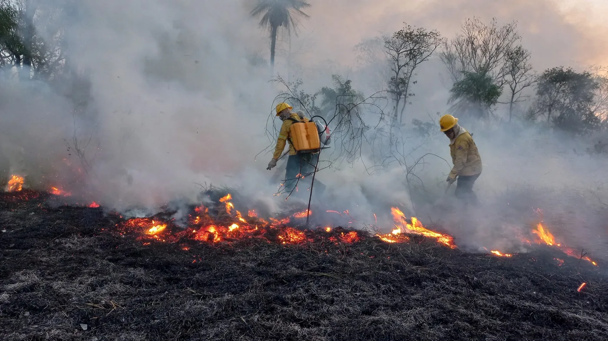
O fogo e as UCs de Miranda
Na REBIO, a Fundação Neotrópica do Brasil forma uma brigada comunitária, com moradores do entorno, para combater incêndios (FUNBIO, [s.d.]). Na RPPN Dona Aracy, o Plano de Manejo prevê aceiros, faixas sem vegetação que ajudam a impedir a passagem do fogo, e ações de proteção e combate a incêndios (Fibracon, 2022).
Campanha Miranda Sem Fogo
Faça sua parte. Previna incêndios. Proteja vidas.
Viu fogo? Afastem-se e avisem um adulto.
- Corpo de Bombeiros193
- Polícia Militar190
- Disque Denúncia Estadual181
- Defesa Civil Estadual(67) 99607-1525
- Prefeitura de Miranda(67) 3242-1508
Fonte: Prefeitura de Miranda (2026).
Atividade 8 Nem todo fogo é igual
Liguem cada termo ao seu significado (Brasil, 2024; Prefeitura de Miranda, 2026).
- Incêndio florestal
- Queima controlada
- Manejo integrado do fogo
- Aceiro
- Brigada
Atividade 9 Pode ou não pode?
Marquem se cada atitude pode ou não pode. Desafio: para cada NÃO PODE, escrevam o que o Guardião deve fazer.
Para conferir: Lei nº 9.985/2000, arts. 10 e 21; Lei nº 9.605/1998, arts. 29 e 42.
Referências fontes deste caderno
- BRASIL. Lei nº 9.605, de 12 de fevereiro de 1998. Dispõe sobre as sanções penais e administrativas derivadas de condutas e atividades lesivas ao meio ambiente, e dá outras providências. Diário Oficial da União: seção 1, Brasília, DF, 13 fev. 1998. Disponível em: planalto.gov.br. Acesso em: 13 nov. 2026.
- BRASIL. Lei nº 9.985, de 18 de julho de 2000. Regulamenta o art. 225, § 1º, incisos I, II, III e VII da Constituição Federal, institui o Sistema Nacional de Unidades de Conservação da Natureza e dá outras providências. Diário Oficial da União: seção 1, Brasília, DF, p. 1, 19 jul. 2000. Disponível em: camara.leg.br. Acesso em: 30 out. 2026.
- BRASIL. Lei nº 12.305, de 2 de agosto de 2010. Institui a Política Nacional de Resíduos Sólidos; altera a Lei nº 9.605, de 12 de fevereiro de 1998; e dá outras providências. Diário Oficial da União: seção 1, Brasília, DF, 3 ago. 2010. Disponível em: planalto.gov.br. Acesso em: 13 nov. 2026.
- BRASIL. Lei nº 14.944, de 31 de julho de 2024. Institui a Política Nacional de Manejo Integrado do Fogo. Diário Oficial da União: seção 1, Brasília, DF, 1 ago. 2024. Disponível em: planalto.gov.br. Acesso em: 13 nov. 2026.
- FIBRACON CONSULTORIA, PERÍCIAS E PROJETOS AMBIENTAIS. Plano de Manejo da Reserva Particular do Patrimônio Natural Dona Aracy: Caiman, Pantanal. Campo Grande: FIBRAcon, ago. 2022.
- FUNBIO. Fundo Brasileiro para a Biodiversidade. Fundação Neotrópica: Marechal Cândido Mariano Rondon REBIO. Programa GEF Terrestre. Disponível em: funbio.org.br. Acesso em: 13 nov. 2026.
- FUNDAÇÃO NEOTRÓPICA DO BRASIL. Guia fotográfico: aves do Mato Grosso do Sul. Fotografias de Breenda Rezende, Fernando de Almeida, Guilherme Dalponti, Jéssica Prestes e Meryelle Oliveira. [S. l.]: Fundação Neotrópica do Brasil, 2026. 1 arquivo PDF, 2 p.
- IBGE. Instituto Brasileiro de Geografia e Estatística. Malha municipal 2025. Rio de Janeiro: IBGE, 2026. Disponível em: ibge.gov.br. Acesso em: 30 out. 2026.
- ICMBIO. Instituto Chico Mendes de Conservação da Biodiversidade. Manual de anilhamento de aves silvestres. Organização de Antonio Emanuel Barreto Alves de Sousa e Patrícia Pereira Serafini. 3. ed. rev. e ampl. Brasília: ICMBio/Cemave, 2020. Disponível em: repositorio.icmbio.gov.br. Acesso em: 13 nov. 2026.
- IMASUL. Instituto de Meio Ambiente de Mato Grosso do Sul. Cadastro Estadual de Unidades de Conservação (CEUC): atualizado em 18/11/2025, conforme os índices ambientais definitivos para o biênio 2025/2026. Campo Grande: IMASUL, jan. 2026. Disponível em: imasul.ms.gov.br. Acesso em: 30 out. 2026.
- MITSUO, Rafael. PARNA do Juruena. 2024. 1 fotografia. Wikimedia Commons. Licença CC BY-SA 4.0. Disponível em: commons.wikimedia.org. Acesso em: 3 nov. 2026.
- NOVAENG. Projeto "Guardiões da Biodiversidade": Unidades de Conservação e Aves em Sala de Aula. Ficha técnica do projeto de Educação Ambiental de Miranda/MS. Campo Grande: NOVAeng, 2026.
- OLIVEIRA, Aílton Carneiro de; KANEGAE, Mieko Ferreira; AMARAL, Marina Faria do; FAVARO, Fernando de Lima. Guia para observação das aves do Parque Nacional de Brasília. Brasília: ICMBio, 2011. Disponível em: gov.br/icmbio. Acesso em: 13 nov. 2026.
- PREFEITURA MUNICIPAL DE MIRANDA. Secretaria Municipal de Meio Ambiente e Recursos Hídricos. Campanha Miranda Sem Fogo: cartaz e folder. Miranda: SEMARH, 2026.
- SEBASTIÃO, Airton Pereira. 3º Lugar: Ibama em Ação. 1 fotografia. Prevfogo/Ibama. Wikimedia Commons. Licença CC BY-SA 2.0. Disponível em: commons.wikimedia.org. Acesso em: 13 nov. 2026.
Respostas das atividades: Caderno do Professor do projeto, NOVAeng (2026).
Compromisso dos Guardiões da Biodiversidade
Nós conhecemos as Unidades de Conservação de Miranda, entre elas a REBIO Marechal Cândido Mariano Rondon, e nos comprometemos a respeitar as áreas protegidas e a ajudar a cuidar da natureza de Miranda.
Assinaturas do grupo
Caderno dos Guardiões da Biodiversidade
Unidades de Conservação e aves de Miranda/MS, em sala de aula
A REBIO
Reserva Biológica Municipal Marechal Cândido Mariano Rondon, UC de Proteção Integral criada pelo Decreto nº 2.636/2017, com 868,5 ha (IMASUL, 2026).
A palestra
Palestra em sala de aula em 16/11/2026 e atividade “Minha ave favorita” na aula de artes em 17/11/2026, com a galeria no mural da escola.
As aves
40 espécies do Guia Fotográfico Aves do Mato Grosso do Sul, da Fundação Neotrópica do Brasil, para conhecer e identificar.
A turma
7º ano da Escola Municipal Waldemar João de Souza, de Miranda, no projeto Guardiões da Biodiversidade.
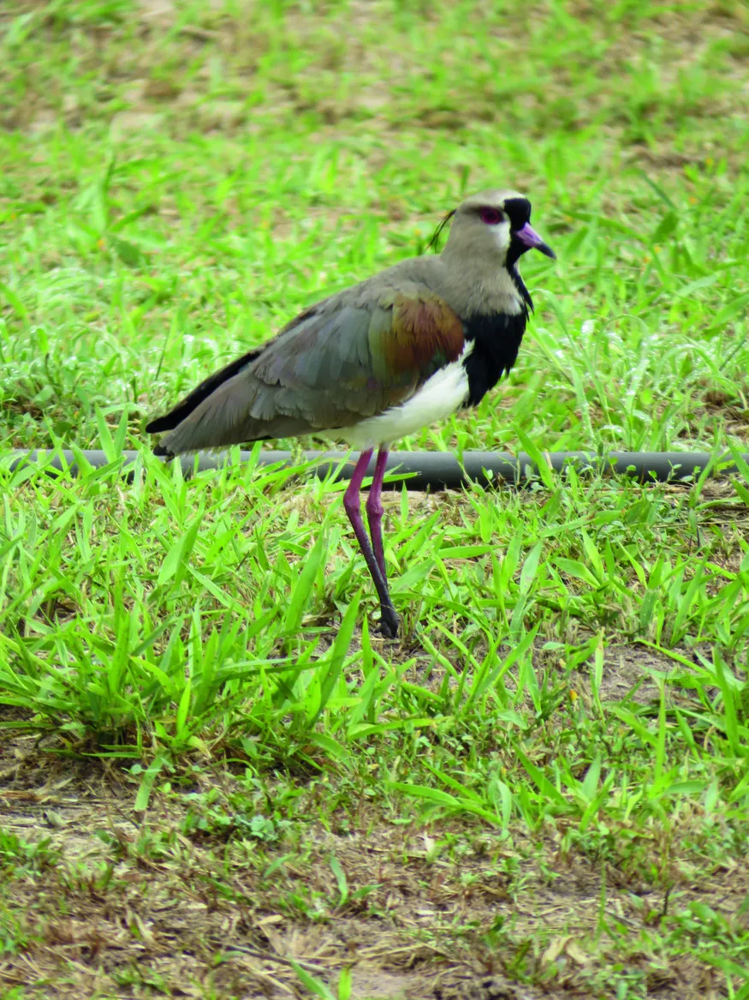
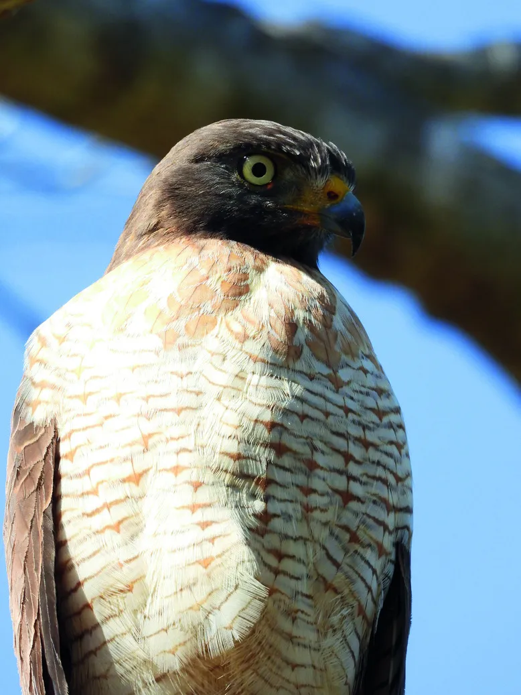
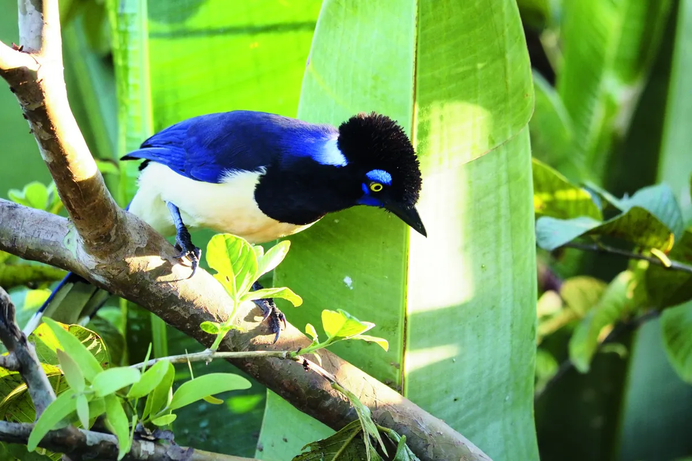
Quero-quero, gavião-carijó e gralha-picaça. Fotos: Fundação Neotrópica do Brasil (2026). Guia Fotográfico Aves do Mato Grosso do Sul. Créditos fotográficos: Breenda Rezende, Fernando de Almeida, Guilherme Dalponti, Jéssica Prestes e Meryelle Oliveira.
Ver as fotos da palestra e da aula de artes →